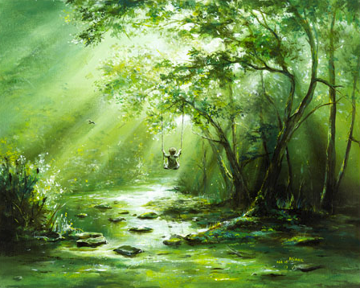

|
Jounrals - "Spring Light"
As northerner, I enjoy the change of the seasons. Right now, spring has sprung, bringing light and warmth to all. This blog is my improvisation of some Latvian dainas (ancient versus) about spring. >> Latvian folklore <<my research about dainas. On equinox, March 20th, Lieldienas (big-days) start. Today, this is usually celebrated around western Easter. Liediena vaicināja, Kur kārš šūpules. Avotu kalnā, Siltajā saulē. <t.dz> personified 'Lieldiena' asks, "where to hang the swing?" answer, "on hill with well, in warm sun." (meaning: "Swing" is movement of life, like sleep-wake cycle. "Hill" is life entity. Life starts from a "well", in earth and water. Life is nurtured and grows with help of "warm sun".) Pavasaris durvis vēra, Lieldieniņu gaidīdams. Visu labu pasaulīte, Atmirdz jaunā dzīvībā. <t.dz> personified - 'Spring' opened the door, waiting for 'Lieldiena' All the good world, "reglows" in new life. Below, is painting by Akiane. She beautifully describes how we can "reglow" and "swing" in new life... 
"Catching the middle of the rainbow, the center of the cosmic spectrum,
the pulsating green is the most visible hue to human vision.Green is the balance between the two extremes that influence the child's life in unexpected ways. The light green represents learning, growth, health and harmony, but a mistreated green suddenly becomes murky and muddy with worry, pain, weakness, bitterness, and resentment, and it seems that no amount of light can return her to its original vibrant color. Except... for the swinging... Whatever troubles that come along she needs to let them pass like a creek passing the callous stones. Let her keep on going and flowing, swinging and nurturing her love. Let the disturbance of the childhood memories find its own current of restoration that shelters others. The direction of her soul is a balanced and continuous movement. The purpose of her soul is to keep on catching the color of peace, balance, protection, a sense of order, safety, tolerance, trust, healing and well-being, so others who are also vulnerable could be protected and healed as well." <Akiane> By Ūsiņi day, we can start to see new growth. Personified Ūsiņi represents tools and work ethic for good growth. Ūsiņi day symbolizes rebirth of nature's colors. Par kalniņu Ūsiņš jāja, Ar akmiņu kumeliņu; Tas atnese kokiem lapas, zemei zaļa āboliņi. <t.dz.> Over the hill we see Ūsiņi riding his pony. They brought leaves for trees, and flowering grasses. Have a bright warm spring season. In love and light! blog by Anda, April 2011 Jounrals Home |